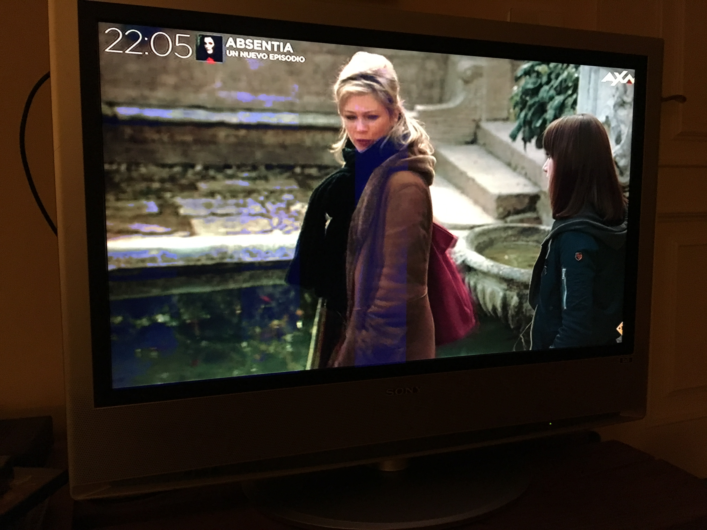
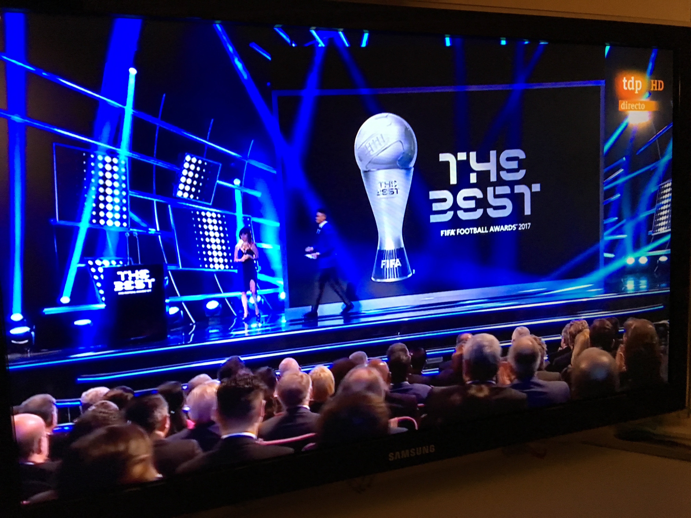

LA TELEVISION
La televisión es un medio de comunicación que se creó a principios del siglo XX permitiendo la divulgación de información de una forma diferente hasta lo visto en la época. Actualmente, los avances tecnológicos han desarrollado y mejorado este medio de comunicación aunque su finalidad sigue intacta, ya que a excepción de los canales de pago estos son gratuitos y emitidos a todos por igual. La emisión de diferentes canales permite una variedad muy amplia de información siendo este uno de los grandes motivos por los que la televisión actualmente sigue haciendo frente a internet. Además, al tratarse de un medio visual cualquier persona hoy en día es capaz de recibir la información sin necesidad de tener una base de conocimiento. Antiguamente eran muchas las personas que no sabían ni escribir ni leer, dificultando así la transmisión de información a través de medios como el periódico.
Internet es uno de los medios de comunicaciones que más protagonismo está ganando actualmente, es por ello que los últimos modelos de televisión están incorporando la posibilidad de conectarse a internet. Son muchas las ventajas que la televisión presenta frente a otros medios de comunicación pero en esta sección no analizaremos estas diferencias.
En conclusión, la televisión es uno de los medios de comunicación más fuertes de hoy en día por su disponibilidad en el mercado y la facilidad de adquisición de la información. Como en todo medio de comunicación hay que recibir la información de una manera crítica, nunca dejándonos influenciar por lo que se nos dice.
